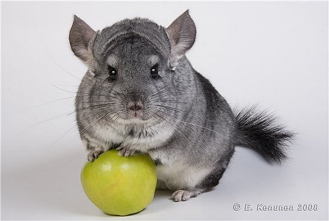

Шиншилла - сходное по виду с белкой животное из отряда грызунов с ценным мягким густым и длинным мехом.
Шиншиллы являлись объектом интенсивной охоты из-за ценного меха, что привело к сильному уменьшению их численности и занесению в Красную книгу :-(
Берегите шиншилл, они чудо! Песня в тему